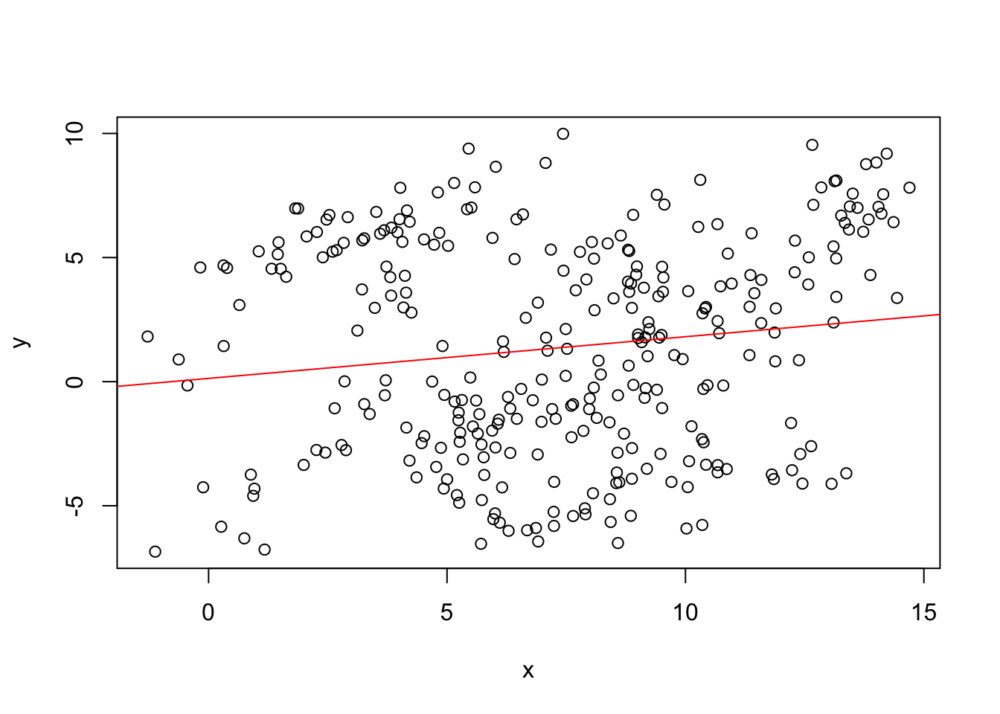
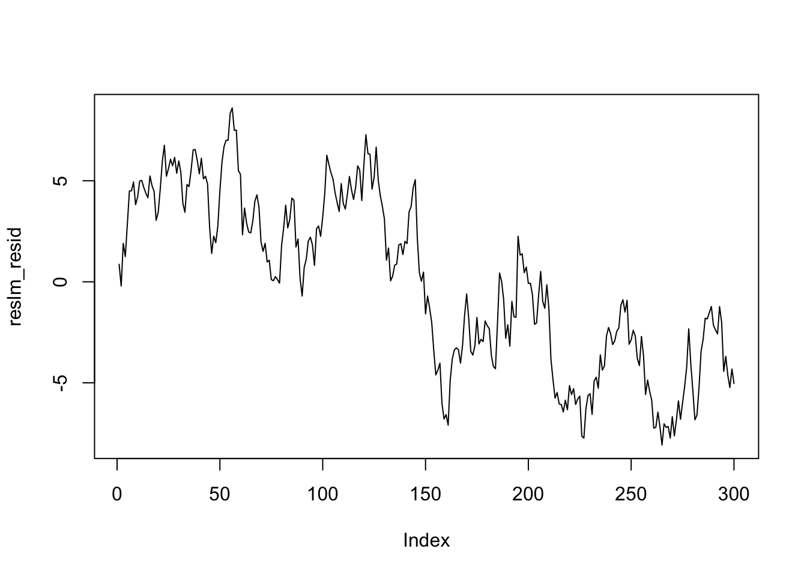
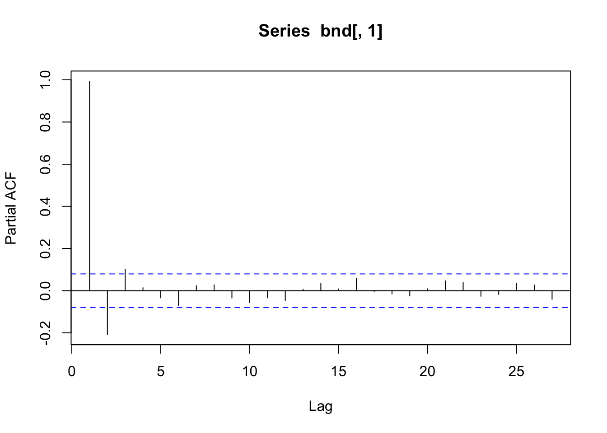
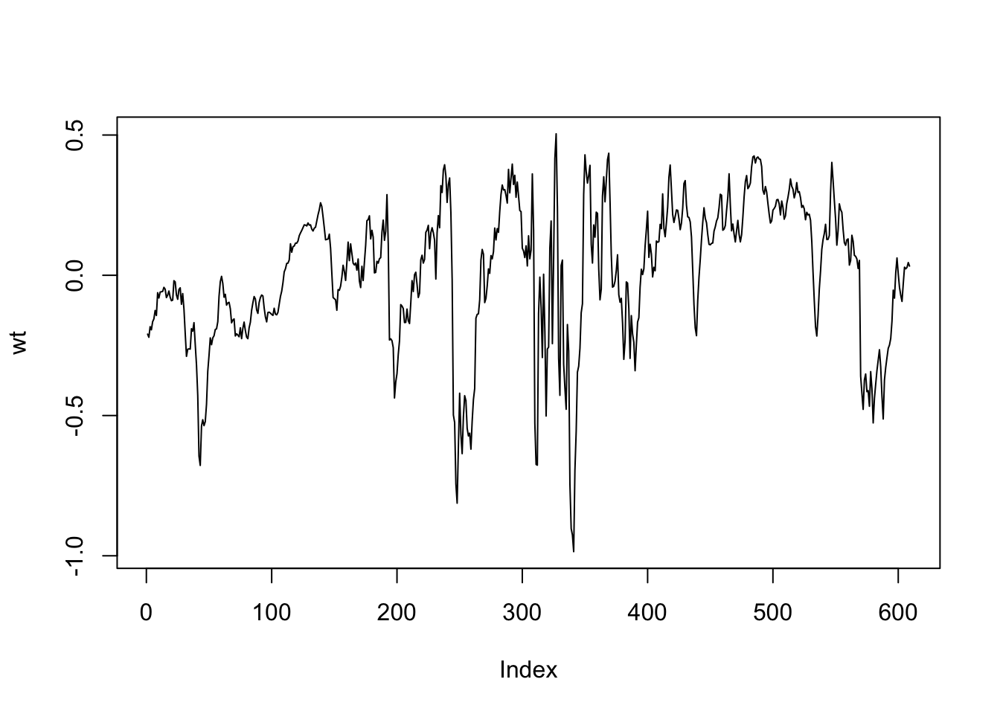

10 共和分分析
共和分 (cointegration) と誤差修正モデル (error correction model, ECM) は, 非定常な時系列データを扱う際に重要な概念・手法である.
長期的な均衡関係と短期的な修正のプロセスを同時にモデル化する枠組みを提供し, 経済・金融分野で広く応用されている.
例として, 長短金利, 関連する商品価格のペア (例, ガソリン vs 原油), 家計の消費と所得, 為替レートと物価指数 (購買力平価説), …など.
個々には非定常だが, 連動して動く時系列に関する経済理論の実証分析に有用である.
2003年, Grangerは共和分に関する研究によりノーベル経済学賞を受賞した (ARCHを提案したEngleと同時受賞).
共和分分析の手順
概ね以下のような流れで行われる (幾つかの要素は前後するか繰り返し行われることがある).
- ステップ1：単位根検定
- 単位根検定 (Augmented Dickey-Fuller検定など) を用いて, 各時系列が非定常であるかを検定する
- 変数が同じ次数（通常 \(I(1)\)）の和分過程であることを確認する.
- 変数の和分の次数が異なる場合は, 次数を揃えるか, 別のアプローチを検討する
- ※) 単位根検定に際しては, 適切な確定項（定数項と線形トレンド) やラグ次数の選択を行う (時系列プロットやACFのコレログラム, AIC/BIC等の情報量基準等を利用)
- ステップ2：共和分検定
- 適切な検定方法を選択する：
- (共和分関係が一つの場合) Engle-Granger検定, Philips-Ouliaris検定
- (共和分関係が複数あることが推察される場合) Johansen検定
- 確定項（定数項と線形トレンド) やラグ次数について適切なモデル仕様を特定する
- 共和分検定を実行し, 共和分関係の有無 (数) を決定する
- 適切な検定方法を選択する：
- ステップ3：ECMモデルの推定
- 誤差修正モデル (ECM) を推定する
- 長期的 (均衡) 関係 (共和分ベクトル) の推定
- 短期的な調整スピードの推定
- 誤差修正モデル (ECM) を推定する
- ステップ4: モデル診断
- 共和分方程式の残差 (誤差) をチェック (ステップ2の中でも)
- ECMの残差をチェック (自己相関, 多変量ARCH効果, 正規性等)
- パラメータの安定性をチェック
- 必要に応じてステップ1–3に戻る
- ステップ5: モデルの解釈
- 推定されたモデルを解釈する. 予想や直感に反しないか?
- 含意・洞察を引き出す
- モデリング上の留意点
- モデルの仕様
- 確定項（定数, トレンド）の選択は検定統計量の分布 (→ 検定結果) に影響
- ラグ長の選択も重要
- 検定の前提条件
- データ生成に構造的な変化がないか
- サンプル・サイズは十分大きいか, 等
- モデルの仕様
共和分・ECMの応用上の留意点
共和分・ECMの方法論を実践する場合には, 時間軸の不明瞭さに注意を払う必要がある.
- 共和分における「長期的」均衡は, 実際にどの程度の期間がかかって実現されるかについて提示しない.
- ECMにおける「短期的」修正は, 単位時間あたりに不均衡が修正される割合 (スピード) を示すだけで, 実際に均衡水準まで修正される保証はない
10.1 見せかけの回帰 (再掲)
-「5.2 単位根検定と見せかけの回帰」の内容 (再掲)
単位根過程\(y_{t}\)を, 定数と\(y_{t}\)と``関係’’ (共和分関係) のない単位根過程\(x_{t}\)に対して回帰すると, \(x_{t}\)と\(y_{t}\)の間に有意な関係があり, 回帰の説明力が高いように見える現象が生じることが知られている. これを, 見せかけの回帰 (spurious regression) と呼ぶ.
tlen <- 300
seedv <- 1
set.seed(seedv)
w1 <- rnorm(tlen)
w2 <- rnorm(tlen)
x <- cumsum(w1)
y <- cumsum(w2)
matplot(cbind(x,y), type = "l")
##
## Call:
## lm(formula = y ~ x)
##
## Residuals:
## Min 1Q Median 3Q Max
## -8.0778 -3.6190 0.0812 3.9438 8.6039
##
## Coefficients:
## Estimate Std. Error t value Pr(>|t|)
## (Intercept) 0.13230 0.55381 0.239 0.8114
## x 0.16810 0.06713 2.504 0.0128 *
## ---
## Signif. codes: 0 '***' 0.001 '**' 0.01 '*' 0.05 '.' 0.1 ' ' 1
##
## Residual standard error: 4.284 on 298 degrees of freedom
## Multiple R-squared: 0.02061, Adjusted R-squared: 0.01733
## F-statistic: 6.272 on 1 and 298 DF, p-value: 0.0128
- 残差に自己相関が残ることの確認


Durbin-Watson検定
- Durbin-Watson検定 (簡便法)
- 回帰残差の系列相関の有無を検定
- \(DW \approx 2(1-\rho)\)
- \(0<DW<4\). 無相関 \(\Leftrightarrow DW=2\)
- 見せかけの回帰の場合. DWが小さい傾向 (正の系列相関)
## Loading required package: zoo##
## Attaching package: 'zoo'## The following objects are masked from 'package:base':
##
## as.Date, as.Date.numeric##
## Durbin-Watson test
##
## data: reslm
## DW = 0.060411, p-value < 2.2e-16
## alternative hypothesis: true autocorrelation is greater than 0- 代替法: Engle-Granger検定
Rで実行可能な主な単位根検定法
- ADF検定: tseries内,
adf.test(); fUnitRoots内,unitrootTest(),adfTest() - Phillips-Perron(PP)検定: urca内,
ur.pp(); tseries内,pp.test()- PP検定は, 沖本, pp.118–120参照
- KPSS検定: urca内,
ur.kpss(); tseries内,kpss.test()- KPSS検定は, 福地・伊藤, pp.139–140参照
- その他の検定法: fUnitRoots内,
urersTest()(Elliott-Rothenberg-Stock検定),urspTest()(Schmidt-Phillips検定),urzaTest()(Zivot-Andrews), 等
10.2 共和分分析
共和分分析の代表的な方法として, OLS回帰の残差をベースにしたEngle-Grangerの方法と, VARモデル (および多変量解析の一種である正準相関分析) をベースにしたJohansenの方法がある.
手順としては, 共和分関係を調べたい各変数が非定常であるかどうかを 単位根検定を使って確認することから始まる. 各変数が全て非定常である (通常は, \(I(1)\)) ことを確認した後, 変数間の共和分関係の有無やその本数を共和分検定法を使って調べる. 検定結果と共に, 共和分関係を記述する共和分ベクトルの推定値が得られる.
以下では, 沖本 (問題6.3, p.144) の設定を例に取り, 4系列 \({\bf y}_t=(y_{1,t},y_{2,t},y_{3,t},y_{4,t})'\) に対する共和分分析を行う
- \(w_{1,t},w_{2,t}\)は, 互いに独立な単位根過程
- \(u_{1,t},u_{2,t},u_{3,t},u_{4,t}\)は互いに独立な定常過程. \(w_{1,t},w_{2,t}\)とも独立
\[ \left\{ \begin{split} y_{1,t} &= w_{1,t}+u_{1,t} \\ y_{2,t} &= 2 w_{1,t} + u_{1,t} \\ y_{3,t} &= w_{2,t} + u_{3,t} \\ y_{4,t} &= w_{1,t}+ 2 w_{2,t} + u_{4,t} \end{split} \right. \]
この時, 直ちに線形独立な共和分ベクトル \(\beta_1 = (1,-0.5,0,0)\), \(\beta_2 = (1,0,2,-1)\) が得られる. 任意の共和分ベクトルは\(\beta_1,\beta_2\)の線形和で表現される.
以下では, Rを使って, 正規乱数によりサンプルパスを生成する (長さ=300)
tlen <- 300 # 任意に変更可
seedv <- 10 # 任意に変更可
set.seed(seedv)
w1 <- cumsum(rnorm(tlen))
w2 <- cumsum(rnorm(tlen))
u1 <- rnorm(tlen); u2 <- rnorm(tlen)
u3 <- rnorm(tlen); u4 <- rnorm(tlen)
#
y1 <- w1 + u1
y2 <- 2 * w1 + u2
y3 <- w2 + u3
y4 <- w1 + 2 * w2 + u4
#
# beta1 = (1, -0.5, 0, 0)
# beta2 = (1, 0, 2, -1)
#
ymat <- cbind(y1, y2, y3, y4)
matplot(ymat, type = "l")
まず, 各成分が単位根過程 \(I(1)\) であることを確認する
##
## Title:
## Augmented Dickey-Fuller Test
##
## Test Results:
## PARAMETER:
## Lag Order: 1
## STATISTIC:
## Dickey-Fuller: -0.1277
## P VALUE:
## 0.5756
##
## Description:
## Sun Feb 2 15:37:16 2025 by user:##
## Title:
## Augmented Dickey-Fuller Test
##
## Test Results:
## PARAMETER:
## Lag Order: 1
## STATISTIC:
## Dickey-Fuller: 0.1048
## P VALUE:
## 0.6497
##
## Description:
## Sun Feb 2 15:37:16 2025 by user:##
## Title:
## Augmented Dickey-Fuller Test
##
## Test Results:
## PARAMETER:
## Lag Order: 1
## STATISTIC:
## Dickey-Fuller: -0.1246
## P VALUE:
## 0.5766
##
## Description:
## Sun Feb 2 15:37:16 2025 by user:##
## Title:
## Augmented Dickey-Fuller Test
##
## Test Results:
## PARAMETER:
## Lag Order: 1
## STATISTIC:
## Dickey-Fuller: -0.7516
## P VALUE:
## 0.3768
##
## Description:
## Sun Feb 2 15:37:16 2025 by user:Engle–Grangerの方法 (Philips-Ouliaris検定)
共和分検定の方法の一つであるPhilips-Ouliaris検定は, 共和分関係が想定される非定常な時系列同士のOLS回帰の残差の定常性を調べることで, これらの間の (一つの) 共和分関係の有無を判断するEngle–Grangerの検定法を改良したものである.
Philips-Ouliaris検定はRパッケージのurcaに含まれる関数ca.po()で実行
することができる.
- urca::ca.po()
- demean (使用するランダムウォーク・モデルのトレンドの指定): "none", "const"(定数項), "trend"(定数項+時間トレンド)
- type (検定種類): "Pu"(デフォルト), "Pz"##
## ########################################
## # Phillips and Ouliaris Unit Root Test #
## ########################################
##
## Test of type Pu
## detrending of series with constant only
##
##
## Call:
## lm(formula = z[, 1] ~ z[, -1])
##
## Residuals:
## Min 1Q Median 3Q Max
## -3.6576 -0.7442 -0.0535 0.7229 3.7571
##
## Coefficients:
## Estimate Std. Error t value Pr(>|t|)
## (Intercept) -0.552717 0.180515 -3.062 0.0024 **
## z[, -1] 0.485335 0.004978 97.500 <2e-16 ***
## ---
## Signif. codes: 0 '***' 0.001 '**' 0.01 '*' 0.05 '.' 0.1 ' ' 1
##
## Residual standard error: 1.114 on 298 degrees of freedom
## Multiple R-squared: 0.9696, Adjusted R-squared: 0.9695
## F-statistic: 9506 on 1 and 298 DF, p-value: < 2.2e-16
##
##
## Value of test-statistic is: 250.2856
##
## Critical values of Pu are:
## 10pct 5pct 1pct
## critical values 27.8536 33.713 48.0021- → 帰無仮説棄却. y1とy2には共和分関係あり 生成された時系列データによる係数の推定値は0.495997, すなわち, 推定された共和分ベクトルは\((1, -0.50)\)である (小数点以下第三位を四捨五入)
実際, 真のモデルは, \(2 y_{1,t} - y_{2,t} = 2 u_{1,t} - u_{t,2} \sim I(0)\), すなわち, 理論的には, 2変数\((y_{1,t}, y_{2,t})\)は, \((1, -0.5)\)の共和分ベクトルとする共和分関係にあった
念のために残差の自己相関を確認する.
##
## Box-Pierce test
##
## data: test_po@testreg$residuals
## X-squared = 1.9295, df = 1, p-value = 0.1648次に\(y_{1,t}, y_{3,t}\)の関係性を調べる.
##
## ########################################
## # Phillips and Ouliaris Unit Root Test #
## ########################################
##
## Test of type Pu
## detrending of series with constant only
##
##
## Call:
## lm(formula = z[, 1] ~ z[, -1])
##
## Residuals:
## Min 1Q Median 3Q Max
## -15.706 -3.851 1.099 4.190 11.736
##
## Coefficients:
## Estimate Std. Error t value Pr(>|t|)
## (Intercept) -5.79847 1.11523 -5.199 3.72e-07 ***
## z[, -1] -0.63880 0.06101 -10.470 < 2e-16 ***
## ---
## Signif. codes: 0 '***' 0.001 '**' 0.01 '*' 0.05 '.' 0.1 ' ' 1
##
## Residual standard error: 5.463 on 298 degrees of freedom
## Multiple R-squared: 0.2689, Adjusted R-squared: 0.2665
## F-statistic: 109.6 on 1 and 298 DF, p-value: < 2.2e-16
##
##
## Value of test-statistic is: 17.1324
##
## Critical values of Pu are:
## 10pct 5pct 1pct
## critical values 27.8536 33.713 48.0021- –> 1%有意水準では帰無仮説棄却されず (y1とy3には共和分関係なし) しかし, 5%水準では棄却 (y1とy3には共和分関係あり)
##
## Box-Pierce test
##
## data: test_po@testreg$residuals
## X-squared = 256.9, df = 1, p-value < 2.2e-16- –> 残差に強い相関がある. 見せかけの回帰が生じていたことを示唆
実際, 真のモデルでは, \(y_{1,t}\)と\(y_{2,t}\)は独立であったことから, 両者間の回帰の有意性は見せかけの回帰現象であった
この例は, ca.po()の出力のみで判断するのでは間違った判断をくだす
可能性もあることを示している. 残差系列の自己相関を調べるなど 見せかけの回帰が生じていないかを同時にチェックすることがのぞましい.
念のため, 線形トレンドを指定した場合を実行
##
## ########################################
## # Phillips and Ouliaris Unit Root Test #
## ########################################
##
## Test of type Pu
## detrending of series with constant and linear trend
##
##
## Call:
## lm(formula = z[, 1] ~ z[, -1] + trd)
##
## Residuals:
## Min 1Q Median 3Q Max
## -8.4928 -2.2329 0.0158 2.3622 8.2619
##
## Coefficients:
## Estimate Std. Error t value Pr(>|t|)
## (Intercept) -5.127606 0.683837 -7.498 7.51e-13 ***
## z[, -1] -0.192680 0.042395 -4.545 8.01e-06 ***
## trd -0.056427 0.002531 -22.296 < 2e-16 ***
## ---
## Signif. codes: 0 '***' 0.001 '**' 0.01 '*' 0.05 '.' 0.1 ' ' 1
##
## Residual standard error: 3.347 on 297 degrees of freedom
## Multiple R-squared: 0.7266, Adjusted R-squared: 0.7247
## F-statistic: 394.6 on 2 and 297 DF, p-value: < 2.2e-16
##
##
## Value of test-statistic is: 57.3364
##
## Critical values of Pu are:
## 10pct 5pct 1pct
## critical values 41.2488 48.8439 65.1714##
## Box-Pierce test
##
## data: test_po@testreg$residuals
## X-squared = 217.59, df = 1, p-value < 2.2e-16すなわち, 先に行ったdemean = "const"と同じ結論が得られる
Johansenの方法
Johansen (88) によって提案されたVARモデルに基づく手法で, 複数の時系列間に存在し得る共和分関係の数やベクトルを同時に推定できる
前提条件として, 観測時系列がGaussian VAR(\(p\))に従うことを想定する.
上記のEngle-Granger等の回帰ベースのアプローチとは異なり, 目的変数・説明変数を区別しない対称的なアプローチである. Johansen検定は, 理論的にはもとのVAR(\(p\))モデルを誤差修正モデル (ECM) 表現する際に得られる係数行列\(\Pi\)の性質を用いて行われる検定方法である. 最大固有値検定とトレース検定の2種類がある.
Rパッケージurca内の関数ca.jo()により実行することができる.
上で生成したデータ行列ymatは, レベル変数でVAR(\(p\))のラグ\(p=1\)を持っている.
一方, 確定項は持っていなかった.
確認のため, 最適な次数\(p\)の大きさを情報量基準を使って選択させると, 次のようになる:
## $selection
## AIC(n) HQ(n) SC(n) FPE(n)
## 1 1 1 1
##
## $criteria
## 1 2 3 4 5 6 7
## AIC(n) 4.210712 4.255809 4.318613 4.384505 4.459940 4.527443 4.599661
## HQ(n) 4.312115 4.438333 4.582259 4.729273 4.885831 5.034455 5.187795
## SC(n) 4.463807 4.711380 4.976661 5.245029 5.522940 5.792919 6.067613
## FPE(n) 67.405451 70.519454 75.102470 80.241682 86.570243 92.680559 99.717711
## 8 9 10
## AIC(n) 4.643317 4.687902 4.743021
## HQ(n) 5.312574 5.438280 5.574522
## SC(n) 6.313746 6.560806 6.818402
## FPE(n) 104.300641 109.234243 115.659305## selected order: aic = 1
## selected order: bic = 1
## selected order: hq = 1
## Summary table:
## p AIC BIC HQ M(p) p-value
## [1,] 0 9.5143 9.5143 9.5143 0.0000 0.0000
## [2,] 1 4.1487 4.3462 4.2277 1540.4422 0.0000
## [3,] 2 4.1932 4.5882 4.3513 17.2556 0.3692
## [4,] 3 4.2538 4.8464 4.4909 12.5987 0.7018
## [5,] 4 4.3220 5.1122 4.6382 10.3463 0.8479
## [6,] 5 4.3937 5.3814 4.7890 9.2848 0.9012
## [7,] 6 4.4566 5.6419 4.9310 11.4398 0.7816
## [8,] 7 4.5251 5.9078 5.0785 9.8422 0.8747
## [9,] 8 4.5610 6.1413 5.1934 17.9336 0.3278
## [10,] 9 4.6057 6.3835 5.3172 15.4564 0.4915
## [11,] 10 4.6583 6.6336 5.4488 13.2842 0.6519
## [12,] 11 4.7242 6.8971 5.5938 9.8390 0.8749
## [13,] 12 4.7830 7.1534 5.7317 11.3701 0.7861
## [14,] 13 4.8310 7.3989 5.8587 13.7028 0.6208(1) 最大固有値検定
- \(H_0\): 共和分ランク\(=r\)以下, \(H_1\): 共和分ランク\(=r+1\)
- urca::ca.jo():
- type (検定の種類): ‘eigen’(最大固有値検定) or ‘trace’(トレース検定)
- ecdet (トレンド種類): ‘none’(切片項なし), ‘const’(定数項あり),‘trend’(トレンド項あり)
- K (時系列(レベル変数)のVAR表現におけるラグ次数) (デフォルト=2)
- spec (VECMの定式化の2つの方法の一つを選択): "longrun"(デフォルト), or "transitory"
- season (季節ダミー): データの頻度を指定(例, 四半期の場合は4)- 全変数に対して実行
レベル変数に対するラグ次数(\(p\))は引数
Kで指定する. 真の次数は\(p=1\)であるがそのままK=1とca.jo()に与えるとエラーを生じるため, デフォルト (K=2) のままにしておく.
##
## ######################
## # Johansen-Procedure #
## ######################
##
## Test type: maximal eigenvalue statistic (lambda max) , with linear trend
##
## Eigenvalues (lambda):
## [1] 0.39399267 0.35373609 0.04001843 0.01669478
##
## Values of teststatistic and critical values of test:
##
## test 10pct 5pct 1pct
## r <= 3 | 5.02 6.50 8.18 11.65
## r <= 2 | 12.17 12.91 14.90 19.19
## r <= 1 | 130.09 18.90 21.07 25.75
## r = 0 | 149.26 24.78 27.14 32.14
##
## Eigenvectors, normalised to first column:
## (These are the cointegration relations)
##
## y1.l2 y2.l2 y3.l2 y4.l2
## y1.l2 1.0000000 1.0000000 1.00000000 1.000000
## y2.l2 -0.6347789 -0.1341194 0.74761830 24.357249
## y3.l2 -0.5785340 1.4100169 -0.01803175 -6.710469
## y4.l2 0.2788528 -0.6893143 -1.62504044 48.535783
##
## Weights W:
## (This is the loading matrix)
##
## y1.l2 y2.l2 y3.l2 y4.l2
## y1.d -0.51186630 -0.320181456 -0.00621887 -2.424265e-04
## y2.d 0.63903190 0.008777047 -0.01134031 -4.269731e-04
## y3.d 0.44326372 -0.453798733 0.01223929 -9.786591e-05
## y4.d -0.06251362 0.124762555 0.01714466 -5.047995e-04- \(r=0\)棄却. \(r \le 1\)棄却, \(r \le 2\)棄却されず.
- → 共和分ベクトルの個数\(=2\)
(2) トレース検定
- \(H_0\): 共和分ランク\(=r\)以下, \(H_1\): 共和分ランク\(=m\) (原系列は定常)
result_t1 <- ca.jo(ymat, ecdet = "none", type = "trace", spec = "longrun")
#result_t1 <- ca.jo(ymat, ecdet = "const", type = "trace", spec = "longrun")
summary(result_t1)##
## ######################
## # Johansen-Procedure #
## ######################
##
## Test type: trace statistic , with linear trend
##
## Eigenvalues (lambda):
## [1] 0.39399267 0.35373609 0.04001843 0.01669478
##
## Values of teststatistic and critical values of test:
##
## test 10pct 5pct 1pct
## r <= 3 | 5.02 6.50 8.18 11.65
## r <= 2 | 17.19 15.66 17.95 23.52
## r <= 1 | 147.28 28.71 31.52 37.22
## r = 0 | 296.54 45.23 48.28 55.43
##
## Eigenvectors, normalised to first column:
## (These are the cointegration relations)
##
## y1.l2 y2.l2 y3.l2 y4.l2
## y1.l2 1.0000000 1.0000000 1.00000000 1.000000
## y2.l2 -0.6347789 -0.1341194 0.74761830 24.357249
## y3.l2 -0.5785340 1.4100169 -0.01803175 -6.710469
## y4.l2 0.2788528 -0.6893143 -1.62504044 48.535783
##
## Weights W:
## (This is the loading matrix)
##
## y1.l2 y2.l2 y3.l2 y4.l2
## y1.d -0.51186630 -0.320181456 -0.00621887 -2.424265e-04
## y2.d 0.63903190 0.008777047 -0.01134031 -4.269731e-04
## y3.d 0.44326372 -0.453798733 0.01223929 -9.786591e-05
## y4.d -0.06251362 0.124762555 0.01714466 -5.047995e-04- \(r=0\)棄却. \(r \le 1\)棄却, \(r \le 2\)棄却されず.
- → 共和分ベクトルの個数\(=2\)
- 共和分ベクトルをウェイトとする\(Yt\)の各成分の線形和計算
- → 定常性の確認
## Warning in fUnitRoots::adfTest(coint_resid[, 1]): p-value smaller than printed
## p-value##
## Title:
## Augmented Dickey-Fuller Test
##
## Test Results:
## PARAMETER:
## Lag Order: 1
## STATISTIC:
## Dickey-Fuller: -10.3616
## P VALUE:
## 0.01
##
## Description:
## Sun Feb 2 15:37:17 2025 by user:## Warning in fUnitRoots::adfTest(coint_resid[, 2]): p-value smaller than printed
## p-value##
## Title:
## Augmented Dickey-Fuller Test
##
## Test Results:
## PARAMETER:
## Lag Order: 1
## STATISTIC:
## Dickey-Fuller: -12.4858
## P VALUE:
## 0.01
##
## Description:
## Sun Feb 2 15:37:17 2025 by user:- 共和分行列 (共和分ベクトル) の最尤推定値
真のモデルより, 共和分ランク (共和分ベクトルの数) \(r=2\),
共和分ベクトルは, \(\beta_1 = (1, -0.5, 0, 0)'\),
\(\beta_2 = (1, 0, 2, -1)\)である.
さらにこれらの任意の線形結合で
作られるベクトルも共和分ベクトルとなる.
上で得られたbeta_matは \(\beta_1,\beta_2\)の推定値の線形結合に
なっている.
Johansen検定は, モデル特定 (ラグ長, 定数項やトレンド項の扱い) に敏感
であることから, ca.joのパラメータには, 本来木目の細かい指定が求められる.
注) 残念ながら, ucraマニュアルはそれほど親切とは言えない.
補足: VECMにおける確定項の入り方について\(^{*}\)
レベル変数に対するVAR(\(p\))モデルは, 定数項 (切片項) や線形トレンド, 季節性ダミー変数などを含んだモデルなどに対する共和分分析/ECMの方法が 研究されている.
VAR/ECMにおける定数項と線形トレンドの扱いは, Johansen (1991) によって整理されている. (福地・伊藤本の10.7.3の説明も参照のこと)
定数や線形トレンドの, 長期的共和分関係 (\(\beta\)に関する式), および短期的VAR方程式 (差分系列に対するECM) への入り方で, 5つに分類される.
| ケース | ECM 表現 | 説明 |
|---|---|---|
| 1: 確定項一切なし | \(\Delta \mathbf{Y}_t = \alpha\,\beta^\top \mathbf{Y}_{t-1} + \sum_{i=1}^{p-1} \Gamma_i \Delta \mathbf{Y}_{t-i} + \varepsilon_t\) | 共和分関係は定数項なし (ゼロの回りで均衡) レベル変数に線形トレンドなし |
| 2: 制約付き定数項 | \(\Delta \mathbf{Y}_t = \alpha(\beta^\top \mathbf{Y}_{t-1} + \beta_0) + \sum_{i=1}^{p-1} \Gamma_i \Delta \mathbf{Y}_{t-i}+ \varepsilon_t\) | 定数項は共和分関係に制限 短期方程式に定数項なし (レベル変数に線形トレンドなし) |
| 3: 制約なし定数項 | \(\Delta \mathbf{Y}_t = c + \alpha(\beta^\top \mathbf{Y}_{t-1} + \beta_0) + \Gamma \Delta \mathbf{Y}_{t-1} + \cdots + \varepsilon_t\) | レベル変数に線形トレンド 共和分関係に定数項 多くの経済・金融時系列におけるアプローチ |
| 4: 制約付き線形トレンド | \(\Delta \mathbf{Y}_t = c + \alpha(\beta^\top \mathbf{Y}_{t-1} + \beta_0 + \beta_1\,t) + \sum_{i=1}^{p-1} \Gamma_i \Delta \mathbf{Y}_{t-i} + \varepsilon_t\) | 線形トレンドは共和分関係に制限 (長期的均衡関係に定数項と線形トレンド) レベル変数に線形トレンド |
| 5: 短期方程式に線形トレンドあり | \(\Delta \mathbf{Y}_t = c + \Phi\,t + \alpha(\beta^\top \mathbf{Y}_{t-1} + \beta_0 + \beta_1\,t) + \sum_{i=1}^{p-1} \Gamma_i \Delta \mathbf{Y}_{t-i} + \varepsilon_t\) | レベル変数に2次トレンド (強いトレンドの可能性) |
補足: 関数ca.jo()の使い方について
出所: urcaマニュアル
引数specの選択
specはVECMモデルの形状を特定する引数である
- 選択肢: “longrun”, “transitory”
以下のような一般的なVARモデル \[ \mathbf{Y}_t = \boldsymbol{\Pi}_1 \mathbf{Y}_{t-1} + \cdots + \boldsymbol{\Pi}_p \mathbf{Y}_{t-p} + \boldsymbol{\mu} + \boldsymbol{\Phi} \boldsymbol{D}_t + \mathbf{\varepsilon}_t \] を考える.
spec = "longrun"(デフォルト) の場合 次の形式のVECM仕様に対する推論を行う. \[ \Delta \mathbf{Y}_t = \boldsymbol{\Gamma}_1 \Delta \mathbf{Y}_{t-1} + \cdots + \boldsymbol{\Gamma}_{p-1} \Delta \mathbf{Y}_{t-p+1} + \boldsymbol{\Pi} \mathbf{Y}_{t-p} + \boldsymbol{\mu} + \boldsymbol{\Phi} \boldsymbol{D}_t + \mathbf{\varepsilon}_t, \] ここで, \[ \boldsymbol{\Gamma}_i = - (\boldsymbol{I} - \boldsymbol{\Pi}_1 - \cdots - \boldsymbol{\Gamma}_i) \, (i=1,...,p-1), \quad \boldsymbol{\Pi} = - (\boldsymbol{I} - \boldsymbol{\Pi}_1 - \cdots - \boldsymbol{\Gamma}_p). \] \(\boldsymbol{\Gamma}_i\)は累積の長期的インパクトを含む係数である.spec = "transitory"の場合 次の形式のVECM仕様に対する推論を行う. \[ \Delta \mathbf{Y}_t = \boldsymbol{\Gamma}_1 \Delta \mathbf{Y}_{t-1} + \cdots + \boldsymbol{\Gamma}_{p-1} \Delta \mathbf{Y}_{t-p+1} + \boldsymbol{\Pi} \mathbf{Y}_{t-1} + \boldsymbol{\mu} + \boldsymbol{\Phi} \boldsymbol{D}_t + \mathbf{\varepsilon}_t, \] ここで, \[ \boldsymbol{\Gamma}_i = - (\boldsymbol{\Pi}_{i+1} + \cdots + \boldsymbol{\Gamma}_i) \, (i=1,...,p-1), \quad \boldsymbol{\Pi} = - (\boldsymbol{I} - \boldsymbol{\Pi}_1 - \cdots - \boldsymbol{\Gamma}_p). \] \(\boldsymbol{\Gamma}_i\)は一時的なインパクトを測る係数である.
なお, \(\boldsymbol{\mu}\) は確定項を, \(\boldsymbol{D}_t\)はダミー変数項を表す. どちらの仕様においても, \(\boldsymbol{\Pi}\) に対する推論 (解釈も) 同じである.
10.3 誤差修正モデル: データ分析例 (Tsay, MTS, Ch5)
共和分 (cointegration)は非定常系列同士が長期的な均衡関係を有することを捉える概念であるが, 誤差修正モデルは, その共和分関係があるもとで, 変数間の長期的均衡からの乖離を考慮 し, 短期の動的な修正のプロセスを記述するモデルである. 誤差修正モデルによって, 一つのモデルの中で長期的均衡関係と短期的な動学的修正を統合的に記述することができる.
理論上は, 「Grangerの表現定理」によれば, 多変量時系列\(\mathbf{y}_t ∼ I(1)\) の成分間に共和分関係があることと, \(\mathbf{y}_t\) に対し (Π のランクを持つ) VECM (ベクトル誤差修正モデル) 表現が存在する ことは同値である.
したがって, データ分析の手順としては, 前節で述べたように 多変量時系列の間に共和分関係の存在を確かめた上で, 誤差修正モデルを推定すれば良いことが分かる.
ここでは, 誤差修正モデルの推定について, 教科書MTSに沿って Rコードと実行結果の要点を記載する.
パッケージは, 上で使用したurcaと合わせて, Tsayが作成したMTSも使用する.
具体的には, urcaの関数ca.jo()によってJohansenの共和分検定を行った後に,
MTSの関数ECMvar1(), ECMrefvar1(), ECMvar()を使ってECMを推定する.
教科書では, 単位根検定からECM推定までの作業フローが解説されている. 次数\(p\)の選択 や確定項の有無に関する判断 (どのタイミングでどのような理由によって) についても言及しているので参考にすると良い.
以下, Rコードや出力結果に関する解説は省略する. 必要に応じて教科書の当該箇所を参照のこと.
- 出所: Tsay, MTS, Ch5より抜粋（適宜, 補足説明挿入, または修正)
共和分検定
- Tsay, 5.9, pp.310–
## Loading required package: fUnitRoots## Loading required package: urca##
## Attaching package: 'urca'## The following objects are masked from 'package:fUnitRoots':
##
## punitroot, qunitroot, unitrootTable## Loading required package: MTS分析に使用するデータ
- 月次社債イールド, 1954.7–2005.3
- FRB St. Louisのデータ
- 系列(Aaa, Baa)が2変量VAR(\(p\))モデルに従うと仮定し. 次数\(p\)を決定:
ifl <- file.path(dir_MTS, "m-bnd.txt") # dir_MTS: m-bnd.txtを格納しているディレクトリ
da <- read.table(ifl)
head(da)## V1 V2 V3 V4 V5
## 1 1954 7 1 2.89 3.50
## 2 1954 8 1 2.87 3.49
## 3 1954 9 1 2.89 3.47
## 4 1954 10 1 2.87 3.46
## 5 1954 11 1 2.89 3.45
## 6 1954 12 1 2.90 3.45bnd <- da[, 4:5]
colnames(bnd) <- c("Aaa", "Baa")
m1 <- MTS::VARorder(bnd) # original function, now in 'MTS'## selected order: aic = 11
## selected order: bic = 3
## selected order: hq = 3
## Summary table:
## p AIC BIC HQ M(p) p-value
## [1,] 0 -0.5697 -0.5697 -0.5697 0.0000 0.0000
## [2,] 1 -7.8664 -7.8374 -7.8551 4331.0806 0.0000
## [3,] 2 -8.1844 -8.1264 -8.1618 195.5266 0.0000
## [4,] 3 -8.2589 -8.1720 -8.2251 51.6109 0.0000
## [5,] 4 -8.2552 -8.1393 -8.2101 5.5112 0.2387
## [6,] 5 -8.2481 -8.1032 -8.1917 3.5073 0.4768
## [7,] 6 -8.2751 -8.1013 -8.2075 23.4161 0.0001
## [8,] 7 -8.2803 -8.0775 -8.2014 10.6262 0.0311
## [9,] 8 -8.2826 -8.0507 -8.1924 8.9080 0.0634
## [10,] 9 -8.2784 -8.0176 -8.1769 5.1613 0.2711
## [11,] 10 -8.2775 -7.9877 -8.1648 7.0457 0.1335
## [12,] 11 -8.2840 -7.9652 -8.1600 11.2224 0.0242
## [13,] 12 -8.2812 -7.9334 -8.1459 5.8956 0.2071
## [14,] 13 -8.2716 -7.8949 -8.1251 2.0355 0.7292- → BIC, HQ(Nannan-Quinn情報量規準), \(p=3\)を選択
次に,
- 各系列の単位根検定 (ADF検定)
- \(H_0\): 単位根有り


# または,
# ar(bnd[, 1]) # --> AIC, p = 3
# ar(bnd[, 2]) # --> AIC, p = 2
#
fUnitRoots::adfTest(bnd[, 1], lags = 3, type = "c")##
## Title:
## Augmented Dickey-Fuller Test
##
## Test Results:
## PARAMETER:
## Lag Order: 3
## STATISTIC:
## Dickey-Fuller: -1.7007
## P VALUE:
## 0.425
##
## Description:
## Sun Feb 2 15:37:19 2025 by user:##
## Title:
## Augmented Dickey-Fuller Test
##
## Test Results:
## PARAMETER:
## Lag Order: 2
## STATISTIC:
## Dickey-Fuller: -1.6221
## P VALUE:
## 0.4544
##
## Description:
## Sun Feb 2 15:37:19 2025 by user:- –> Aaa, Baa系列のADF検定、棄却されない (H0: 単位根非定常)

## Aaa Baa
## 0.01862195 0.02077461- 階階差列の平均値ベクトルは, ゼロから有意に離れていない → 共和分検定に, 定数項入れない (Tsay, p.310)
- 共和分検定におけるトレンドの指定. Tsay, p.304を参照
Johansenの方法
- Johansenの方法 → 共和分関係の検定, 共和分ベクトルや共和分ランク(個数)の推定
最大固有値法
- \(H_0\): 多くても\(r\)個の共和分関係しか存在しない vs \(H_1\): \((r+1)\)個の共和分関係が存在する
- (\(H_0\): 共和分ランク\(=r\) vs \(H_1\): 共和分ランク\(=r+1\))
- urca::ca.jp関数
- x: 共和分を調べたいデータ行列 (原系列)
- type: 検定方法の種類. 'eigen'(最大固有値法), 'trace' (トレース法)
- ecdet: トレンド指定. 'none' (なし), 'const' (定数項有), 'trend' (線形トレンド有)
- $\Delta {\bf y}_t = {\bf \mu}_0 + {\bf \mu}_1 t+\cdots$
- (→ 共和分関係にも定数項や線形トレンドが含まれる)
- K: 系列(水準)のVARラグ次数
- spec: VECMの特定化. "longrun" ($ {\bf Γ}_i , 長期的(累積)インパクト), "transitory" ((${\bf Γ}_i$, 一時的インパクト)
)##
## ######################
## # Johansen-Procedure #
## ######################
##
## Test type: maximal eigenvalue statistic (lambda max) , with linear trend
##
## Eigenvalues (lambda):
## [1] 0.054773196 0.004665298
##
## Values of teststatistic and critical values of test:
##
## test 10pct 5pct 1pct
## r <= 1 | 2.84 6.50 8.18 11.65
## r = 0 | 34.19 12.91 14.90 19.19
##
## Eigenvectors, normalised to first column:
## (These are the cointegration relations)
##
## Aaa.l2 Baa.l2
## Aaa.l2 1.0000000 1.000000
## Baa.l2 -0.8856789 -2.723912
##
## Weights W:
## (This is the loading matrix)
##
## Aaa.l2 Baa.l2
## Aaa.d -0.04696894 0.002477064
## Baa.d 0.04046524 0.002139536- → \(r=0\)は棄却. \(r=1\)は棄却されず
- → \(r=1\) (共和分有. 共和分ベクトルの個数 (\(\Pi\) 行列のランク))
#m3 <- urca::ca.jo(bnd, K = 2, ecdet = c("none"), spec = c("transitory"))
#summary(m3)
# 定数項有のケース
m3 <- urca::ca.jo(bnd, K = 2, ecdet = c("const"), spec = c("longrun"))
summary(m3)##
## ######################
## # Johansen-Procedure #
## ######################
##
## Test type: maximal eigenvalue statistic (lambda max) , without linear trend and constant in cointegration
##
## Eigenvalues (lambda):
## [1] 5.477346e-02 4.878009e-03 6.935308e-21
##
## Values of teststatistic and critical values of test:
##
## test 10pct 5pct 1pct
## r <= 1 | 2.97 7.52 9.24 12.97
## r = 0 | 34.19 13.75 15.67 20.20
##
## Eigenvectors, normalised to first column:
## (These are the cointegration relations)
##
## Aaa.l2 Baa.l2 constant
## Aaa.l2 1.000000000 1.000000 1.000000
## Baa.l2 -0.885675435 -2.701784 -3.315369
## constant -0.003491742 16.399576 -13.776952
##
## Weights W:
## (This is the loading matrix)
##
## Aaa.l2 Baa.l2 constant
## Aaa.d -0.04699903 0.002507156 2.325397e-18
## Baa.d 0.04043910 0.002165681 -1.589823e-18トレース法
- \(H_0\): 多くても\(r\)個の共和分関係しか存在しない vs \(H_1\): 全ての変数が定常
- (\(H_0\): 共和分ランク\(=r\) vs \(H_1\): 共和分ランク\(=m\) (原系列は定常))
m4 <- urca::ca.jo(bnd, K = 2, ecdet = c("none"), type = c("trace"), spec = c("transitory"))
summary(m4)##
## ######################
## # Johansen-Procedure #
## ######################
##
## Test type: trace statistic , with linear trend
##
## Eigenvalues (lambda):
## [1] 0.054773196 0.004665298
##
## Values of teststatistic and critical values of test:
##
## test 10pct 5pct 1pct
## r <= 1 | 2.84 6.50 8.18 11.65
## r = 0 | 37.03 15.66 17.95 23.52
##
## Eigenvectors, normalised to first column:
## (These are the cointegration relations)
##
## Aaa.l1 Baa.l1
## Aaa.l1 1.0000000 1.000000
## Baa.l1 -0.8856789 -2.723912
##
## Weights W:
## (This is the loading matrix)
##
## Aaa.l1 Baa.l1
## Aaa.d -0.04696894 0.002477064
## Baa.d 0.04046524 0.002139536- → \(r=0\)は棄却. \(r=1\)は棄却されず
- → \(r=1\) (同)
## Aaa.l1 Baa.l1
## Aaa.l1 1.0000000 1.000000
## Baa.l1 -0.8856789 -2.723912→ 共和分ベクトル: \((1, -0.886)\)
得られた``cointegration’’系列 \(w_t=1 \cdot Aaa_t - 0.886 \cdot Baa_t\)に対して単位根検定
# wt <- bnd[, 1] - 0.886 * bnd[, 2]
wt <- as.matrix(bnd) %*% coint_vec[, 1]
#
fUnitRoots::adfTest(wt, lags = 3, type = "c")## Warning in fUnitRoots::adfTest(wt, lags = 3, type = "c"): p-value smaller than
## printed p-value##
## Title:
## Augmented Dickey-Fuller Test
##
## Test Results:
## PARAMETER:
## Lag Order: 3
## STATISTIC:
## Dickey-Fuller: -4.6052
## P VALUE:
## 0.01
##
## Description:
## Sun Feb 2 15:37:19 2025 by user:- → \(p\)値\(=0.01\) (単位根無)

- → “定常時系列の特徴を示す”
誤差修正モデル (ECM) の推定
- 前提: VARモデルの次数\(p\),共和分ベクトルの数は既知 (上で得られた)
ECMのOLS推定
- 共和分ベクトル\(\beta_t\)が既知の場合:
- 上で得られた ``cointegrating系列’’wt=bnd[,1]-0.886*bnd[,2] を所与として \((p=3, r=1)\), ECMをOLS推定
- MTS::ECMvar1(x, p, wt=wt, include.const = FALSE, fixed = NULL, output = TRUE)
- ECM VAR(p)モデルのOLS推定 (wtが既知の場合)
- x: (Txk), k次元共和分VAR過程
- wt: (Txm), m次元共和分過程
- include.const: 定数項の有無 (デフォルト=F)## alpha:
## Aaa Baa
## [1,] -0.00122 0.0634
## standard error
## [,1] [,2]
## [1,] 0.0347 0.0306
## AR coefficient matrix
## AR( 1 )-matrix
## Aaa Baa
## Aaa 0.452 -0.00149
## Baa 0.293 0.20380
## standard error
## [,1] [,2]
## [1,] 0.0879 0.1008
## [2,] 0.0774 0.0887
## AR( 2 )-matrix
## Aaa Baa
## Aaa -0.300 0.0535
## Baa -0.151 0.0274
## standard error
## [,1] [,2]
## [1,] 0.0860 0.0940
## [2,] 0.0757 0.0827
## -----
## Residuals cov-mtx:
## Aaa Baa
## Aaa 0.0400851 0.03167180
## Baa 0.0316718 0.03105888
##
## det(sse) = 0.0002418953
## AIC = -8.294165
## BIC = -8.221721## Aaa Baa
## xmtx -0.001217005 0.06339082
## Aaa 0.451993390 0.29303941
## Baa -0.001491101 0.20379673
## Aaa -0.299907502 -0.15075817
## Baa 0.053499341 0.02742606## [,1] [,2]
## [1,] 0.03471368 0.03055639
## [2,] 0.08790257 0.07737541
## [3,] 0.10080919 0.08873634
## [4,] 0.08600254 0.07570293
## [5,] 0.09396739 0.08271391## Aaa Baa
## xmtx -0.03505836 2.0745518
## Aaa 5.14198170 3.7872419
## Baa -0.01479132 2.2966546
## Aaa -3.48719367 -1.9914443
## Baa 0.56933946 0.3315773- 推定されたECM (\(w_t=\beta'{\bf y}_t=(1,- 0.886){\bf y}_t\)) \[ \Delta {\bf y}_t = \left[\begin{array}{r} -0.001 \\ 0.064 \end{array}\right] w_t + \left[\begin{array}{rr} 0.452 & -0.001 \\ 0.293 & 0.204 \end{array} \right] \Delta {\bf y}_{t-1} \] \[ +\left[\begin{array}{rr} -0.300 & 0.054 \\ -0.151 & 0.028 \end{array} \right] \Delta {\bf y}_{t-2} + \epsilon_t,\quad \hat{\Sigma}= \frac{1}{100} \left[\begin{array}{rr} 4.01 & 3.17 \\ 3.17 & 3.11 \end{array} \right] \]
OLS推定されたECMの修正
- ECMの修正 (パラメータ数削減)
- 有意でない係数を0に置く
- MTS::refECMvar1(m1, thres = 1)
- ECM VAR(p)モデルの制約付きOLS推定 (wtが既知の場合)
- thres: t-ratioの閾値(デフォルト=1)
- |t-ratio| < thres の推定係数を0に置き換える## Equation: 1 npar = 2
## Equation: 2 npar = 4
## alpha:
## [,1] [,2]
## [1,] 0 0.0625
## standard error
## [,1] [,2]
## [1,] 1 0.0304
## AR coefficient matrix
## AR( 1 )-matrix
## [,1] [,2]
## [1,] 0.448 0.000
## [2,] 0.286 0.212
## standard error
## [,1] [,2]
## [1,] 0.0393 1.0000
## [2,] 0.0746 0.0855
## AR( 2 )-matrix
## [,1] [,2]
## [1,] -0.256 0
## [2,] -0.129 0
## standard error
## [,1] [,2]
## [1,] 0.0393 1
## [2,] 0.0382 1
## -----
## Residuals cov-mtx:
## [,1] [,2]
## [1,] 0.04010853 0.03168277
## [2,] 0.03168277 0.03106450
##
## det(sse) = 0.0002421536
## AIC = -8.306234
## BIC = -8.262768- 推定されたECM (修正後) \[ \Delta {\bf y}_t = \left[\begin{array}{r} 0.000 \\ 0.063 \end{array}\right] w_t + \left[\begin{array}{rr} 0.448 & 0.000 \\ 0.286 & 0.212 \end{array} \right] \Delta {\bf y}_{t-1} \] \[ +\left[\begin{array}{rr} -0.256 & 0.000 \\ -0.129 & 0.000 \end{array} \right] \Delta {\bf y}_{t-2} + \epsilon_t,\quad \hat{\Sigma}= \frac{1}{100} \left[\begin{array}{rr} 4.01 & 3.17 \\ 3.17 & 3.11 \end{array} \right] \]
# pacf(m2$residuals)
# --> model checking, 若干の系列相関, 相互相関有り(教科書の記述と齟齬?)
# --> alpha(1,1)=0 <-- Aaa系列の1階階差系列は定常
m2$coef## [,1] [,2]
## [1,] 0.0000000 0.06250339
## [2,] 0.4484522 0.28620026
## [3,] 0.0000000 0.21172072
## [4,] -0.2559947 -0.12908889
## [5,] 0.0000000 0.00000000## [,1] [,2]
## [1,] 1.00000000 0.03044171
## [2,] 0.03929053 0.07458234
## [3,] 1.00000000 0.08546551
## [4,] 0.03930742 0.03821387
## [5,] 1.00000000 1.00000000## [,1] [,2]
## [1,] 0.000000 2.045509
## [2,] 5.101696 3.698853
## [3,] 0.000000 2.385953
## [4,] -2.976594 -1.705203
## [5,] 0.000000 0.000000ECMのQML推定
- 共和分ベクトル\(\beta_t\)が未知の場合:
- 仮定:イノベーション系列 \({\epsilon_t}\) がGaussian
- MTS::ECMvar(x,p,ibeta)
- ECM VAR(p)モデルのQML推定 (wtが未知の場合)
- ibeta: co-integrating matrix初期値
- alpha: alpha行列の初期値 (デフォルト=NULL)# beta <- c(1, -0.886) ### Initial value of co-integration
beta <- coint_vec[, 1]
m3 <- MTS::ECMvar(bnd, p = 3, ibeta = beta, include.const = F) #### Joint estimation## Order p: 3 Co-integrating rank: 1
## Number of parameters: 11
## initial estimates: -0.001217005 0.06339082 -0.8856789 0.4519934 -0.001491101 -0.2999075 0.05349934 0.2930394 0.2037967 -0.1507582 0.02742606
## Par. Lower-bounds: -0.05328753 0.01755623 -0.9464619 0.3201395 -0.1527049 -0.4289113 -0.08745174 0.1769763 0.07069222 -0.2643126 -0.09664481
## Par. Upper-bounds: 0.05085352 0.1092254 -0.8248958 0.5838472 0.1497227 -0.1709037 0.1944504 0.4091025 0.3369012 -0.03720378 0.1514969
## Final Estimates: -0.0007839214 0.0637811 -0.8865273 0.4518197 -0.001408246 -0.3000951 0.05359282 0.2928489 0.203917 -0.1509735 0.02759872
##
## Coefficient(s):
## Estimate Std. Error t value Pr(>|t|)
## -0.0007839 0.0346658 -0.023 0.981958
## 0.0637811 0.0305205 2.090 0.036638 *
## Baa.l1 -0.8865273 0.0055000 -161.187 < 2e-16 ***
## 0.4518197 0.0884438 5.109 3.25e-07 ***
## -0.0014082 0.1013908 -0.014 0.988918
## -0.3000951 0.0859973 -3.490 0.000484 ***
## 0.0535928 0.0939314 0.571 0.568303
## 0.2928489 0.0777471 3.767 0.000165 ***
## 0.2039170 0.0891346 2.288 0.022153 *
## -0.1509735 0.0756992 -1.994 0.046110 *
## 0.0275987 0.0826788 0.334 0.738526
## ---
## Signif. codes: 0 '***' 0.001 '**' 0.01 '*' 0.05 '.' 0.1 ' ' 1
## alpha:
## [,1]
## [1,] -0.000784
## [2,] 0.063781
## standard error
## [,1]
## [1,] 0.0347
## [2,] 0.0305
## beta:
## [,1]
## [1,] 1.000
## [2,] -0.887
## standard error
## [,1]
## [1,] 1.0000
## [2,] 0.0055
## AR coefficient matrix
## AR( 1 )-matrix
## [,1] [,2]
## [1,] 0.452 -0.00141
## [2,] 0.293 0.20392
## standard error
## [,1] [,2]
## [1,] 0.0884 0.1014
## [2,] 0.0777 0.0891
## AR( 2 )-matrix
## [,1] [,2]
## [1,] -0.300 0.0536
## [2,] -0.151 0.0276
## standard error
## [,1] [,2]
## [1,] 0.0860 0.0939
## [2,] 0.0757 0.0827
## -----
## Residuals cov-mtx:
## Aaa Baa
## Aaa 0.0399535 0.03156630
## Baa 0.0315663 0.03095427
##
## det(sse) = 0.0002403005
## AIC = -8.297496
## BIC = -8.217807## [1] 1## [,1]
## [1,] -0.0007839214
## [2,] 0.0637811002## [,1]
## [1,] 1.0000000
## [2,] -0.8865273## [,1] [,2]
## [1,] 0.451819715 0.29284889
## [2,] -0.001408246 0.20391696
## [3,] -0.300095060 -0.15097350
## [4,] 0.053592821 0.02759872## [,1] [,2]
## [1,] 0.08844376 0.07774707
## [2,] 0.10139081 0.08913462
## [3,] 0.08599728 0.07569917
## [4,] 0.09393137 0.08267879推定されたECM (修正後) \[ \Delta {\bf y}_t = \left[\begin{array}{r} -0.001 \\ 0.064 \end{array}\right] [1,-0.887] {\bf y}_t + \left[\begin{array}{rr} 0.452 & -0.001 \\ 0.293 & 0.204 \end{array} \right] \Delta {\bf y}_{t-1} \] \[ +\left[\begin{array}{rr} -0.300 & 0.054 \\ -0.151 & 0.028 \end{array} \right] \Delta {\bf y}_{t-2} + \epsilon_t,\quad \hat{\Sigma}= \frac{1}{100} \left[\begin{array}{rr} 4.00 & 3.16 \\ 3.16 & 3.10 \end{array} \right] \]
→ 初期モデル(m1)と近い結果
``サンプルサイズが比較的大きい一方で低次元であり, 驚くことでない’’
(補足): \(w_t=1 \cdot Aaa_t - 0.887 \cdot Baa_t\)が定常過程
- \(w_t>0\) → Aaa_tのイールドが相対高, Baa_tが相対安 → スプレッド”縮小”時
- → \({\bf y}_t\)への影響; \([-0.001,0.064]'w_t\)
- 翌月のAaa_tイールドを\(0.001\cdot w_t\)押し下げる
- 翌月のBaa_tイールドを\(0.064\cdot w_t\)押し上げる
- → 翌月のスプレッドが”拡大”する方向に作用